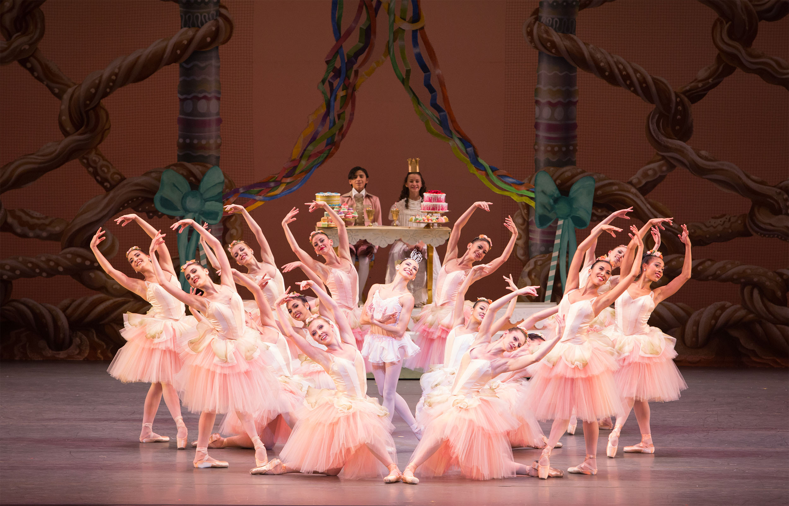

The Nutcracker
The Nutcracker, Op. 71, is an 1892 two-act classical ballet by Pyotr Ilyich Tchaikovsky, set on Christmas Eve at the foot of a Christmas tree in a child's imagination.

Welcome to World of Ballet, your go-to spot for all things ballet.
Whether you're a seasoned dancer or simply intrigued by the art form, we're here to guide you through its rich history, iconic performances, and more.
Join us on this enchanting journey where every step tells a story and every leap brings new beauty and expression.
Ballet originated in the Italian Renaissance courts of the 15th century.
Noblemen and women were treated to lavish events, especially wedding celebrations, where dancing and music created an elaborate spectacle.
Dancing masters taught the steps to the nobility, and the court participated in the performances.
Today, ballet is a global art form performed in theaters and dance studios around the world. It continues to evolve and adapt, while preserving its rich history and tradition.
The Nutcracker, Op. 71, is an 1892 two-act classical ballet by Pyotr Ilyich Tchaikovsky, set on Christmas Eve at the foot of a Christmas tree in a child's imagination.
Don Quixote is a ballet in three acts, based on episodes taken from the famous novel Don Quixote de la Mancha by Miguel de Cervantes.
Swan Lake, Op. 20, is a ballet composed by Russian composer Pyotr Ilyich Tchaikovsky in 1875–76.
Loading... Under Construction